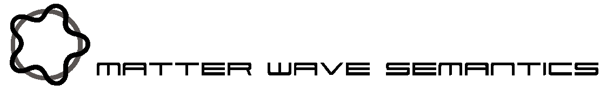

Welcome
to matter wave semantics
We
are a develpers consortium that creates traceable IT solutions for the
life science and engineering domain. We strongly focus on Ontologies,
computer interpretable knowledge representation formalisms like OWL-DL
and lexical resources in order to facilitate information management. We
apply AI reasoners to scientific knowledge to generate practical value
for customers that like to search, process and connect big data
resources via artificial intelligence methods.
Who we are
We
are a bunch of enthusiastic life science and IT nerds with a vision and
the expertise to create innovative smart solutions in the field of
Knowledgemanagement and digital sciences.
What we do
We
provide external industry consultation on the field of semantic web and
linked open data methods, creating, optimizing and applying RDF and OWL
based ontologies for your research data domain.
Examples
include ontologies for cloud learning robots that mediate the
experience between different robotics platforms for fast worldwide
accumulated learning and memory/experience up/download.
Our other services
MWS
consists of three subsidiary groups tackling
Silico-Synapse
Investigating
Computer-to-brain Interfacing.
Sensor
Synergetics
Investigating
combinatorial use of primary sensors to emulate new assaying methods
for smartphones and microscale computing devices.
Effector
Emergence
Investigating
emerging technologies for micro-attenuators in smartphones and
microscale computing devices.
Publications
If you are
interested to see what topics we have tackled in the past, one way ist
to read some papers authored by our ceo at his ORCID
page
Here is the
QR code

Contact
If
you like to know more, get a specific offer, or simply provide
feedback, please contact us via email or web-form.
Impressum
Matter
Wave Semantics Gmbh
c/o
Dr.
Daniel Schober
Wickeröder
Strasse 229
06546
Südharz